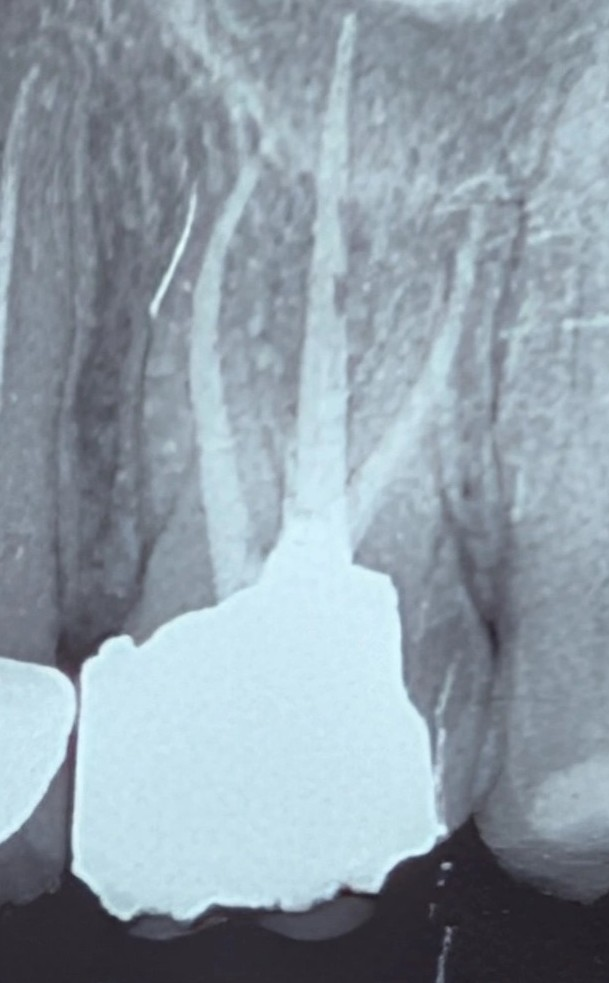

بیمار با درد مبهم در ناحیه مزیال دندان ۶ بالا سمت چپ مراجعه کرد. درد بیشتر به صورت درد مبهم بیندندانی توصیف میشد.
در معاینه، کانتکت بسته بود و با عبور نخ دندان درد بازسازی نشد؛ بنابراین گیر غذایی فعال یا باز بودن کانتکت بهعنوان علت اصلی چندان مطرح نبود.
در رادیوگرافی، یک ترمیم آمالگام وسیع مشاهده میشد که کانتور آن در ناحیه مزیال و در کنار استخوان نامناسب بود.
شکل ترمیم عملاً فضای طبیعی ناحیه اینترپروگزیمال را مختل کرده و با توجه به موقعیت آن، احتمال تجاوز به بیولوژیک ویدث مطرح میشد.
علاوه بر این، تحلیل خفیفی از کرست استخوانی در همان ناحیه دیده میشد که میتواند نشانهای از پاسخ بافت پریودنتال به همین تجاوز باشد.
در چنین شرایطی درد بیمار الزاماً ناشی از پوسیدگی یا مشکل اندودانتیک نیست؛
بلکه تغییر کانتور ترمیم و نزدیکی بیش از حد آن به استخوان میتواند باعث التهاب مزمن و ناراحتی مبهم در ناحیه شود.
درمان منطقی در این وضعیت، برداشت کامل آمالگام و ارزیابی دقیق نسج باقیمانده دندان است.
در ادامه باید وضعیت بیولوژیک ویدث بررسی شود. اگر تجاوز به BW تأیید شود، برای ایجاد فاصله بیولوژیک مناسب نیاز به جراحی افزایش طول تاج خواهد بود.
پس از اصلاح شرایط پریودنتال و ایجاد فضای مناسب، بازسازی نهایی دندان با طراحی صحیح کانتور و در نهایت درمان پروتزی (پایه و روکش) میتواند پیشآگهی قابل قبولتری فراهم کند.
این کیس یادآوری سادهای است از اینکه در ترمیمهای پروگزیمال، تنها بستن کانتکت کافی نیست؛
کانتور صحیح و احترام به بیولوژیک ویدث به همان اندازه در سلامت بافتهای اطراف دندان نقش دارند.